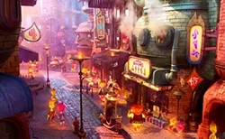

The Wetro
The Wetro System connects all city sectors providing a fast and easy way to travel throughout the city.
Firetown
Firetown is a bustling sector of the town. This area provides many Fireland immigrants with familiar communites and is also home to various lively and traditional firish restaurants, shops, and locations.
Cyclone
The Cyclone in an entertainment hub for the city. On any given game day you will see energetic fans gathering to witness the games.
City Train
If you follow the Wetro through all of its stops you will find yourself with an incredible view of the city and all of its sectors. The train acts as a common thread that pulls together all of the sectors of the city.
City Hall
City Hall is the well-oiled machine that keeps Element City running in tip top shape. They are the one stop shop for local business owner to obtain all of the proper paper work and permits to get the business running in the city.
Element City
In Element City you will find a warm welcome, no matter where you come from! We pride ourselves on being a melting pot and on our envirment that allows a variety of business to spread their wings and fly.